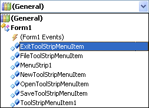
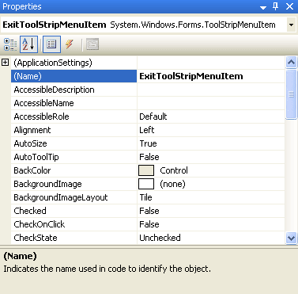
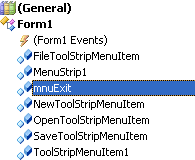
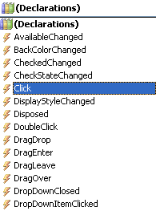
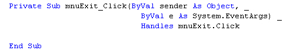
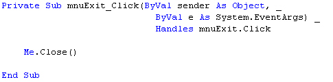

Adding code to a VB.NET menu
This tutorial assumes that you have completed the previous one.
Stop your programme and return to the design environment. Click File in Design Time to see your drop down menu. You can double click an item to open up the code window. But don't do that yet.
Another way to get to the code for an object is this:
- Press F7 on your keyboard to go to the code window (CTRL +ALT + 0 in version 2012)
- Click the black arrow at the top, where it says General:

The Exit menu here is "ExitToolStripMenuItem". If you were to click that item, a code stub would open, ready for you to type your code.
However, "ExitToolStripMenuItem" is very difficult to remember. We
can rename our menu items so that they are more descriptive. So do this:
- Get back to your form by pressing Shift + F7 on your keyboard
- Click the File menu to select it
- Select your Exit (or your Quit) item (Careful not to click in the middle as this may open the code window.Click near the left edge somewhere.)
- When you have the Exit item selected, look at the properties box on the right:

- Click inside the Name property
- Change it to mnuExit (or mnuQuit)
- Press your return key on your keyboard to confirm the change
Now press F7 (or CTRL + ALT + 0) again to bring the code window up. Click the drop down arrow of the General box, and you should see the new name appear (Notice that MenuItem6 has vanished):

Click on your new mnuExit item.
Nothing will happen!
To jump straight to the code, you need to look at the drop down box opposite.
It will probably say "Declarations". Click the arrow and you'll see
a new list:

The items in the Declarations box are called Events. The Event you want is the Click event. So select that one from the list (we'll cover Events in more depth later). When you select Click from the list, you are taken straight into the code for that event. It should be like this one:

The code above has been tidied up to fit on this page; yours will all be on one line. But notice that it says mnuExit_Click.
Don't worry too much about what it all means; we'll get to that in a later section. What we want to do is add some of our own code, so that out Exit menu item actually does something.
There's only one line of code to add. It's this:
Me.Close( )
The word "Me" refers to the form. When your type the word Me, you'll see a list if items appear. Double click the word Close, then press your return key. Your code window should look like this:

(Again this has been tidied up to fit on this page.)
To test out your new code, run your programme. Click your File menu,
and then click the Exit item. Your form should close down, and you'll
be returned to the design environment.
In the next part, we'll see how to add Sub menus.